このダッシュボードは、Sentinel-1衛星のSARレーダー波形をリアルタイムに解析し、タンクの液面変化を監視する実験的なプロジェクトです。以下のチャートとAIレポートは、最新の観測データとGoogle検索からの情報を組み合わせて生成されたものです。
OSSプロジェクトのGitHubリポジトリ: https://github.com/rohiniku/s1-tank-monitor
※本レポートは、宇宙からのレーダー波形を自律的に読み解いたAIが、今朝のGoogle検索ニュースとリアルタイムに結合して自動生成した実験用ファクトチェック報告です。
・志布志基地では、2026年4月以降、VV偏波のdB値が過去平均（約0dB）を大幅に上回る持続的な上昇トレンドを示し、最大2.71dBに達している。これは、石油タンクの屋根上昇、すなわち在庫増加の物理的変化を明確に示唆する。 ・志布志基地のVV偏波の継続的な高値トレンドは、過去に前例のない異常な状況であり、原油在庫の継続的な増加を示唆する。この上昇傾向が維持されるか、さらに加速するかを注視し、今後の動向を最大限に警戒する必要がある。
・志布志基地では2026年4月下旬以降、VV偏波が顕著かつ持続的に上昇し、在庫が大幅に増加している異常な物理ファクトが観測された。 ・経済産業省は2026年3月と5月に志布志を含む国家備蓄原油の放出を発表し、実際に放出が開始されたと報道されているが、SARデータは放出とは逆の在庫増加を示しており、報道内容と物理データに明確な矛盾がある。これは中東情勢悪化に伴う代替調達（アゼルバイジャン、カナダ、米国等）による新規原油の大量入庫が放出量を上回った可能性を示唆する。 ・中東情勢の緊迫化が続く中、志布志基地での継続的な在庫高水準は、政府が備蓄放出と並行して、非中東からの原油調達を加速し、国内備蓄を積極的に再構築している最大の警戒シグナルである。
・志布志のVV偏波は2026年4月以降、過去に例のない高水準で推移し、在庫が大幅に増加している。 ・ホルムズ海峡の事実上封鎖が続く中、志布志の在庫増加は供給途絶リスクへの日本の戦略的備蓄強化と整合する。 ・ホルムズ海峡の通航統制長期化と迂回ルートへの攻撃は、日本のエネルギー安全保障の脆弱性を露呈し続ける。
📊 最新の幾何アライメント済・移動平均観測チャート
（※画像上でダブルタップまたはピンチアウトすることで、ブラウザ標準の滑らかなズーム操作が可能です）
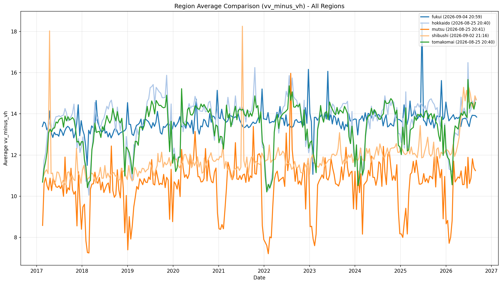
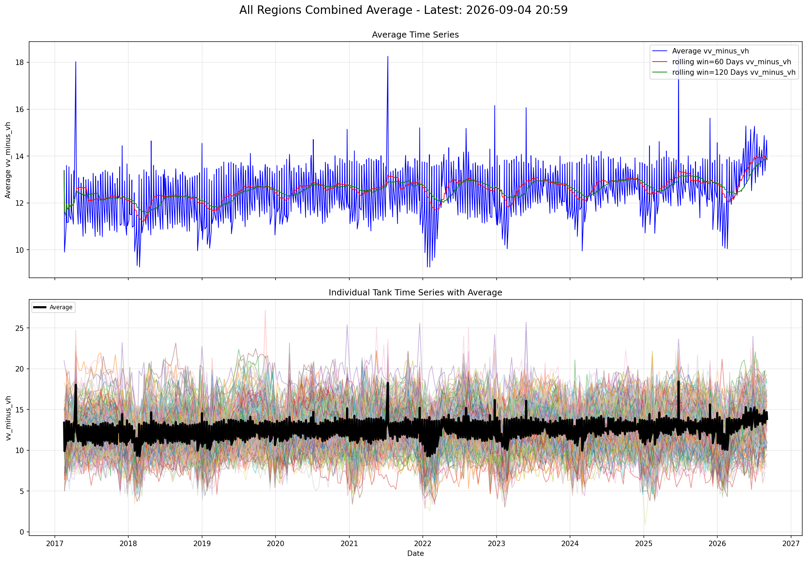
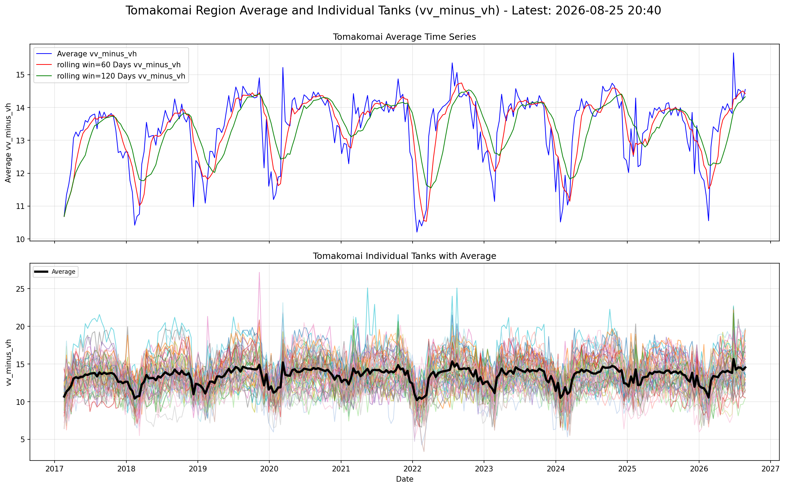
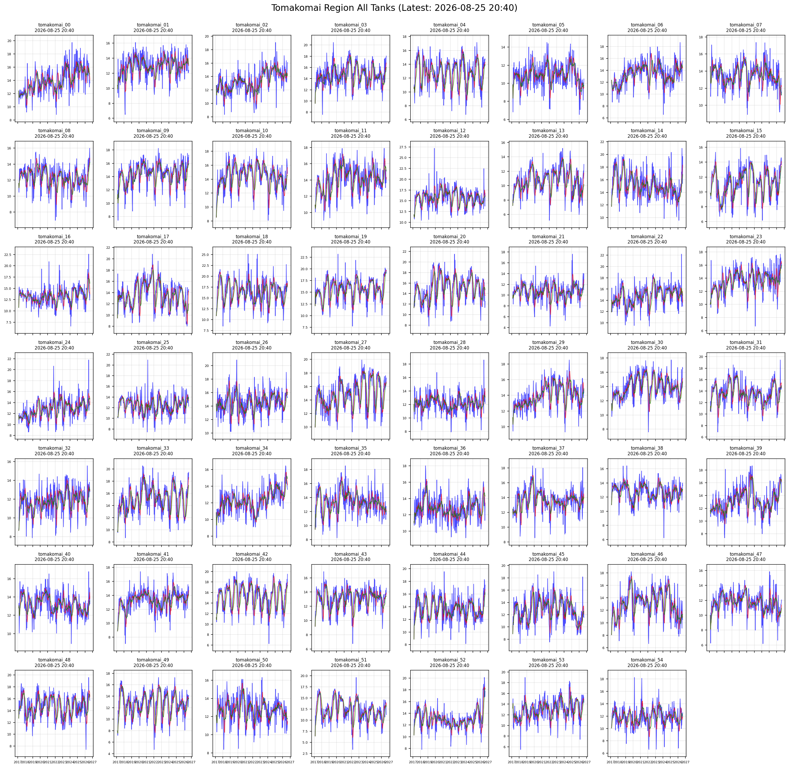
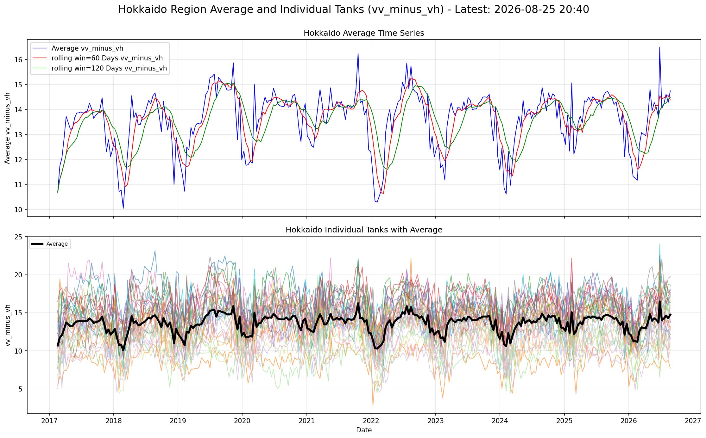
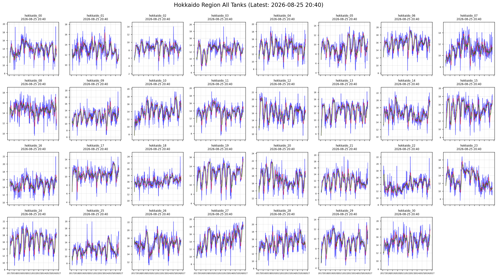
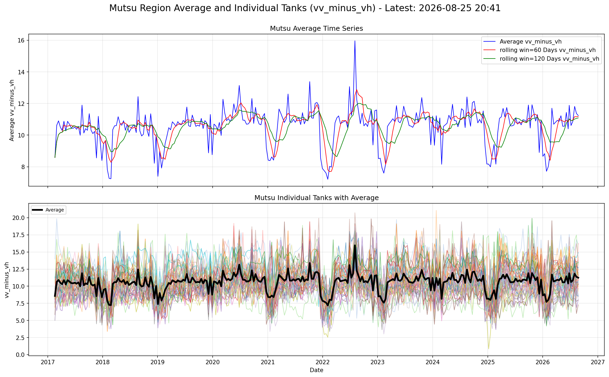
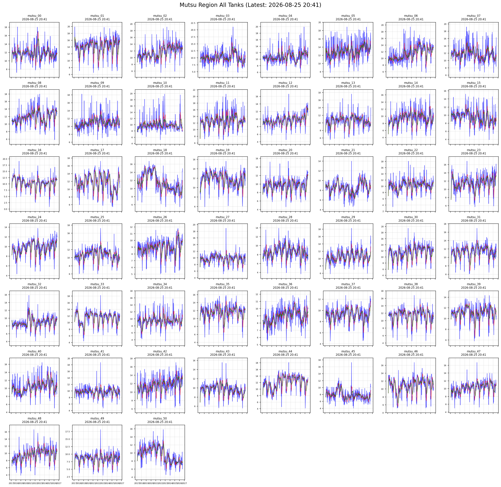
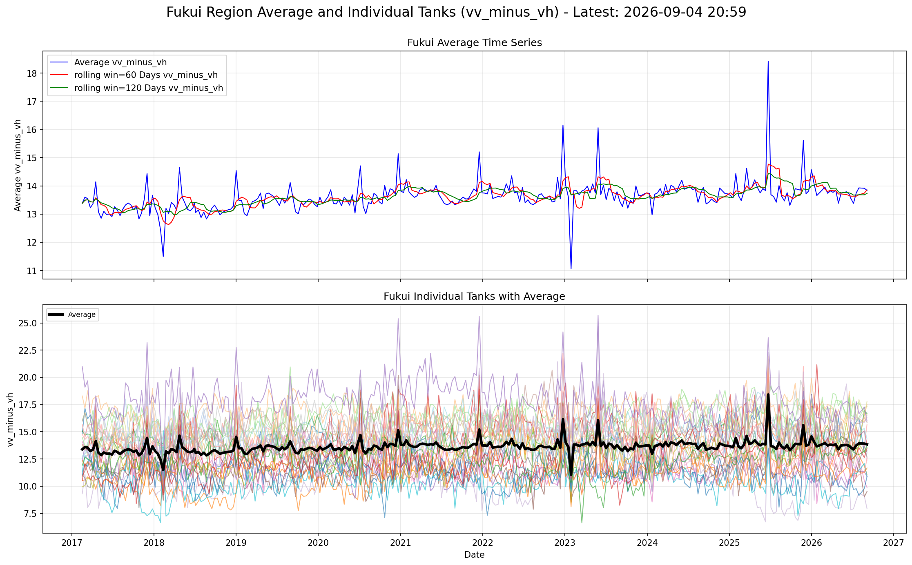
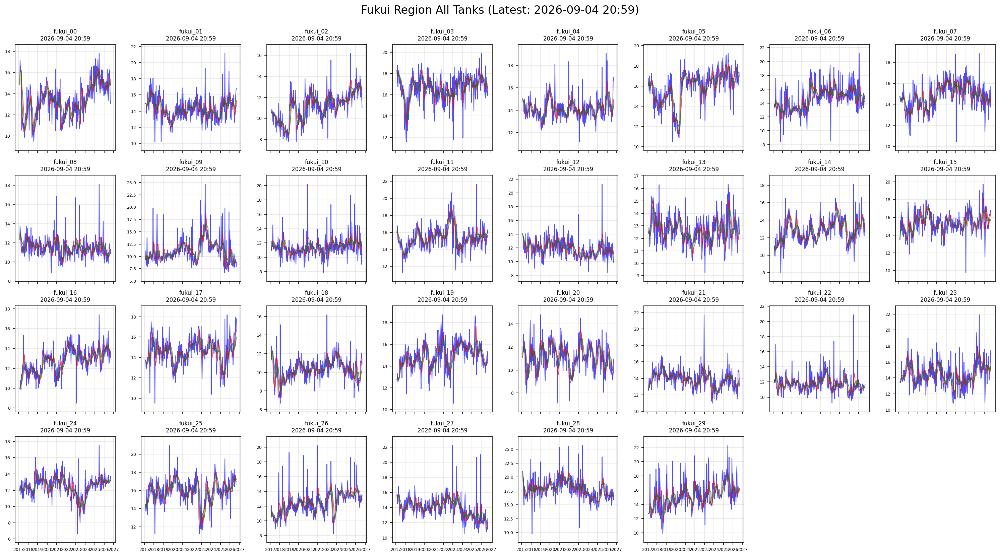
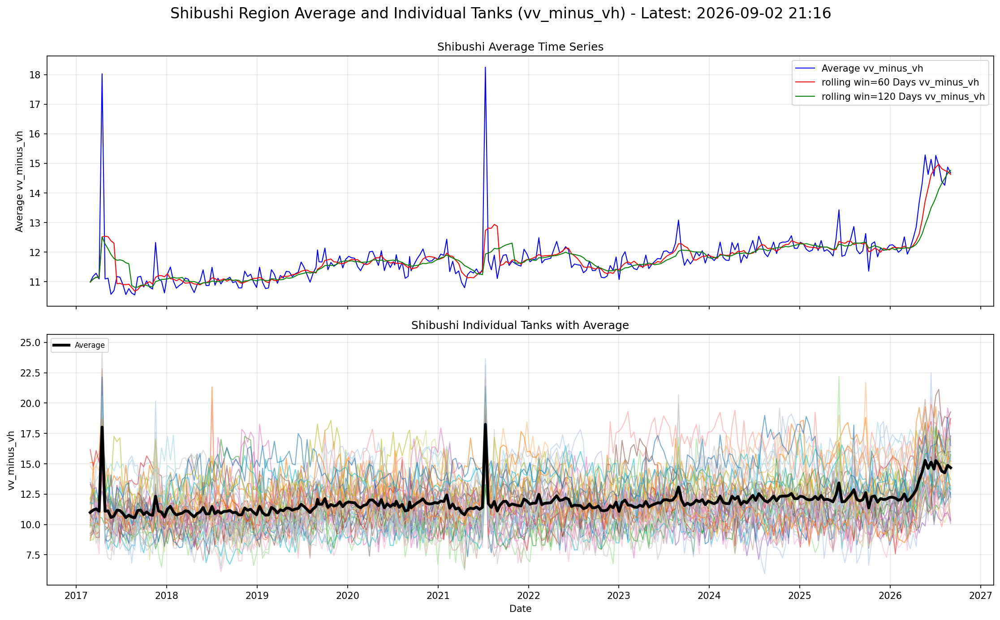
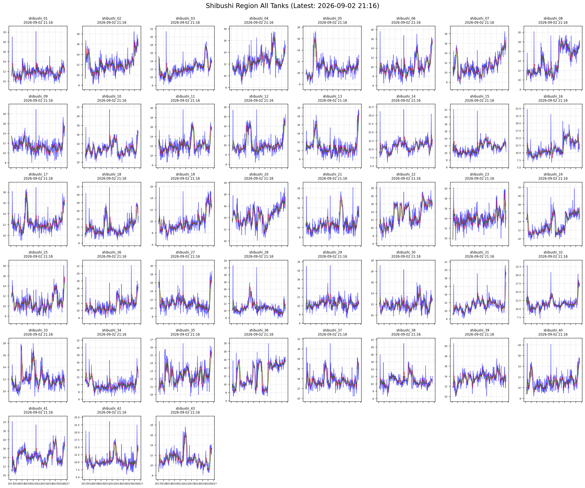